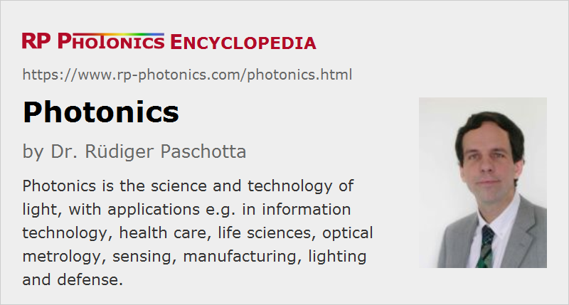

Photonics
Definition: the science and technology of light
Alternative term: lightwave technology
More specific terms: silicon photonics, quantum photonics
German: Photonik
How to cite the article; suggest additional literature
Author: Dr. Rüdiger Paschotta
Photonics is the science and technology of light, with an emphasis on applications: harnessing light in a wide range of fields. This term photonics was coined by the French physicist Pierre Aigrain in 1967 and is widely used since the mid-1970s. An alternative term is lightwave technology. There is also the term photon science, which relates to the scientific part of photonics.
Light (high-frequency electromagnetic radiation) obviously plays the central role in photonics. The used light encompasses not only visible, but also infrared and ultraviolet light.
At the heart of photonics are technologies for generating light (e.g. with lasers or with light-emitting diodes), transmitting, amplifying, modulating, detecting and analyzing light (e.g. with spectroscopy), and particularly using light for various practical purposes. It thus builds heavily on optical technology (→ optics), supplemented with modern developments such as optoelectronics (mostly involving semiconductors), laser systems, optical amplifiers and novel materials (e.g. photonic metamaterials). The scientific basis is mostly within physics, in particular optical physics and related areas such as laser physics and quantum optics.
Typical application areas of photonics are
- information technology: e.g. optical fiber communications for fast internet access, free-space optical communications, quantum cryptography and optical data storage, in the future probably also optical computing; partly, one uses techniques of quantum photonics
- health care and life sciences (biophotonics): e.g. medical diagnostics and therapy in ophthalmology, infection sciences and cancer research; biology, biotechnology, DNA analysis, genome mapping
- optical metrology in various areas: e.g. frequency metrology for ultra-precise time keeping or distance measurements with lasers
- sensing: e.g. fiber-optic sensors, high-speed cameras, infrared motion detectors or industrial process control
- manufacturing: e.g. laser material processing, semiconductor chip manufacturing, printing
- lighting and illumination: e.g. energy-efficient LED illumination
- solar power, providing renewable energy at already very competitive prices
- defense and space technology: e.g. satellite surveillance systems, navigation, imaging, night vision, missile guidance, anti-missile systems, high-power directed-energy weapons
Photonic key technologies of particular importance are laser and amplifier systems, light-emitting diodes (LEDs), optical fibers and other waveguides, optical modulators, photodetectors (including cameras), and displays.
There is an analogy with electronics: just as electronics is the utilization of electrons, photonics works on the basis of photons. The quantum (photon) nature of light is often, but by far not always of interest in photonics; there is the more specific area of quantum photonics. This is important for secure communications, and in the future possibly also for quantum computing. A substantial amount of scientific research is still required to enable such advanced applications.
Importance of Photonics
Photonics is considered as one of the key technologies of the 21st century. It supplements electronics in the form of optoelectronics (optronics) and exhibits a strong market growth, which is expected to continue for the foreseeable future. So far, photonics has achieved a deep penetration of mass markets and correspondingly large sales volumes in only a few areas, e.g. laser diodes in CD/DVD players and related technics of optical data storage. Huge growth opportunities are expected from the development of silicon photonics and other technologies for photonic integrated circuits, from LEDs with improved output power and efficiency, or from laser types (e.g. VECSELs) which are suitable for cost-effective mass production.
Various government institutions, including agencies for research funding, have recognized the enormous importance of photonics for science, technology and the whole economy:
- There is the European technology platform Photonics21, which implements a common photonics strategy in the Horizon2020 Public Private Partnership and is expected to have substantial effects on job creation. Many hundreds of million euros per year support photonics research programs in Europe.
- In the United States, the National Photonics Initiative (NPI) tries to increase collaboration and coordination among the U.S. industry, government and academia, and to identify particularly important areas of photonics which are critical for competitiveness and national security. The report Harnessing Light of the U.S. National Academy of Sciences Light committee has found a lot of attention by analyzing the current state of optical sciences and suggested goals for future developments.
- China, Japan and South Korea are also investing enormous resources into photonics research. For example, the new Science and Technology (S&T) plan of China does a lot for photonics research and development; of the order of 1 billion euros per year are currently invested into photonics R & D in China.
Nobel Prizes in Photonics
The importance of photonics is also underlined by the substantial number of Nobel Prizes awarded in recent years:
- 2018: Nobel Prize in Physics awarded to Arthur Ashkin for the invention of optical tweezers and to Gérard Mourou and Donna Strickland for chirped-pulse amplification.
- 2017: Nobel Prize in Physics awarded to Rainer Weiss, Barry C. Barish and Kip S. Thorne “for decisive contributions to the LIGO detector and the observation of gravitational waves” (→ use of laser interferometers for gravitational wave detection)
- 2014: Nobel Prize in Physics awarded to Isamu Akasaki, Hiroshi Amano and Shuji Nakamura “for the invention of efficient blue light-emitting diodes which has enabled bright and energy-saving white light sources” (→ light-emitting diodes)
- 2014: Nobel Prize in Chemistry awarded to Eric Betzig, Stefan W. Hell and William E. Moerner “for the development of super-resolved fluorescence microscopy” (→ fluorescence microscopy)
- 2012: Nobel Prize in Physics awarded to Serge Haroche and David J. Wineland “for ground-breaking experimental methods that enable measuring and manipulation of individual quantum systems” (→ quantum optics, laser cooling of atoms, optical frequency standards)
- 2010: Nobel Prize in Physics awarded to Andre Geim and Konstantin Novoselov “for groundbreaking experiments regarding the two-dimensional material graphene” (which has particularly interesting implications in photonics)
- 2009: Nobel Prize in Physics awarded to Charles Kuen Kao “for groundbreaking achievements concerning the transmission of light in fibers for optical communication” (→ optical fibers, fiber optics, optical fiber communications) and to Willard S. Boyle and George E. Smith “for the invention of an imaging semiconductor circuit – the CCD sensor”
- 2005: Nobel Prize in Physics awarded to Roy J. Glauber “for his contribution to the quantum theory of optical coherence” (→ coherence, quantum optics) and to John L. Hall and Theodor W. Hänsch “for their contributions to the development of laser-based precision laser spectroscopy, including the optical frequency comb technique” (→ frequency combs, optical frequency standards, frequency metrology)
- 2001: Nobel Prize in Physics awarded to Eric A. Cornell, Wolfgang Ketterle and Carl E. Wieman “for the achievement of Bose-Einstein condensation in dilute gases of alkali atoms, and for early fundamental studies of the properties of the condensates”
- 2000: Nobel Prize in Physics awarded to Zhores I. Alferov and Herbert Kroemer “for developing semiconductor heterostructures used in high-speed- and opto-electronics” (→ laser diodes) (together with Jack S. Kilby “for his part in the invention of the integrated circuit”, which is outside photonics)
- 1997: Nobel Prize in Physics awarded to Steven Chu, Claude Cohen-Tannoudji and William D. Phillips “for development of methods to cool and trap atoms with laser light” (→ laser cooling)
Influence of Cost of Market Penetration
In many application areas, the progress for market penetration of photonics products is hindered by the problem of high cost. For example, lasers are in most cases rather expensive devices, even when based on not particularly complex technology. The main reasons for that are the following:
- Due to the short wavelengths of light, optical components often need to be aligned very precisely. Therefore, highly precise opto-mechanics are required, and the alignment procedures can be difficult and time-consuming, as far as they cannot be automated.
- Although alignment processes can often be avoided by using fiber connectors instead of free-space optics, fiber optics connections are also much more delicate than most electrical connections.
- Generally, optical setups are highly sensitive to dust, dirt and scratches, so that they need to be made in a very clean environment and handled with great care. (This is also largely due to the short optical wavelengths.)
- Due to the small production numbers, most lasers and photonic instruments (e.g. optical spectrum analyzers) are fabricated in ways which require substantial amounts of labor. Efficient production methods, as used for example for cars or for electronics, are so far not widely used, because the high initial investment would be worthwhile only for larger production numbers – which however are still hindered by the current product cost.
- Even though the total production numbers of lasers, for example, have become quite substantial, they are spread over a huge number of different models – not only because they are made by numerous manufacturers, but also because a substantial number of operation parameters has to be adapted to specific applications, having very different requirements.
The more effective solutions are found for those problems, the better are the chances for further economical growth of the photonic sector. For example, VECSEL technology could lead to substantially cheaper replacements for many traditional solid-state lasers (mostly for continuous-wave operation), and silicon photonics could find a lot of applications in mass markets (particularly in information technology) with strong cost pressure.
Questions and Comments from Users
Here you can submit questions and comments. As far as they get accepted by the author, they will appear above this paragraph together with the author’s answer. The author will decide on acceptance based on certain criteria. Essentially, the issue must be of sufficiently broad interest.
Please do not enter personal data here; we would otherwise delete it soon. (See also our privacy declaration.) If you wish to receive personal feedback or consultancy from the author, please contact him e.g. via e-mail.
By submitting the information, you give your consent to the potential publication of your inputs on our website according to our rules. (If you later retract your consent, we will delete those inputs.) As your inputs are first reviewed by the author, they may be published with some delay.
Bibliography
| [1] | Conference proceedings Photonics, edited by M. Balkanski and P. Lallemand, Gauthier-Villars, Paris (1975)” |
| [2] | C. Roychoudhuri (ed.), Fundamentals of Photonics, course for first- and second-year college students, available on CD-ROM or online open access via http://spie.org/x17229.xml |
| [3] | B. E. A. Saleh and M. C. Teich, Fundamentals of Photonics, John Wiley & Sons, Inc., New York (1991) |
| [4] | Day of Photonics, http://day-of-photonics.org/ |
See also: quantum photonics, laser physics, optoelectronics, quantum electronics, optics, silicon photonics, photonic integrated circuits
and other articles in the category photonic devices
|  |
If you like this page, please share the link with your friends and colleagues, e.g. via social media:
These sharing buttons are implemented in a privacy-friendly way!